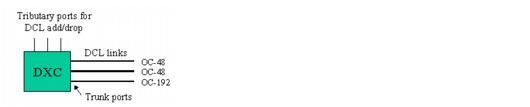
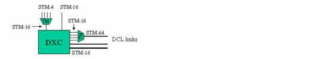

Concepts and Models > Node Modeling Capabilities in SP Guru Transport Planner > SONET Nodes: DXC
SONET Nodes: DXC
An ECC node can cross-connect SONET traffic only and not optical traffic; therefore, the ECC node is equipped with a DXC by default. The trunk ports of the DXC connect to the physical DCL links that terminate in the node. For example, if an OC-48 DCL link terminates in the node, an OC-48 trunk port is used on the DXC. The DXC is a digital switching matrix that can switch traffic down to the STS-1 level (STM-1 level for SDH traffic) between different DCL links (transit traffic) or between a DCL link and the tributary ports for a local add/drop port (local traffic).
Figure 2-13 DXC in ECC Node

Minimum and Maximum Bit Rates for Tributary and Trunk Ports
A DXC node type is specified by the number of equivalent STS-3/STM-1 ports. By default, the bit rates on available ports are determined by either the traffic terminated at the add/drop ports, or the bit rate of the links terminated at the trunk ports.
Despite this default, you can limit the bit rates for the DXC ports. At the tributary side, you can specify a minimum tributary port bit rate. Any add/drop traffic with a lower bit rate than this specified minimum bit rate is not directly fed to the DXC but is attached to a SONET/SDH terminal multiplexer, which aggregates traffic up to the minimum bit rate.
You can also specify a maximum trunk port bit rate, which specifies the maximum bit rate allowed at the trunk ports. For example, the maximum bit rate could be STM-16 while DCL links in the network work at STM-64 rate. This configuration requires a mid-stage multiplexer to aggregate the traffic through the DXC STM-16 ports up to STM-64 signals, carried on a DCL link.
Figure 2-14-DXC with Minimum Tributary and Maximum Trunk Bit Rate of STM-16 shows a DXC with minimum and maximum bit rates equal to STM-16. At the tributary ports, all traffic with a bit rate lower than STM-16 is multiplexed to a STM-16 rate. At the trunk ports, all channels that operate above the STM-16 rate are de-multiplexed into STM-16 constituents. The aggregation rates affect the port count on the DXC only; they do not affect the routing, the grooming, or the internal switching granularity of the DXC.
Figure 2-14 DXC with Minimum Tributary and Maximum Trunk Bit Rate of STM-16

Protection Options
DCL traffic can be client-protected. If it is client-protected, two tributary ports are required on the DXC for each protected connection. If the traffic is not client-protected, one tributary port is sufficient and the protection switching is done internally in the DXC.
| Home © 1987-2007 OPNET Technologies, Inc. All Rights Reserved. This software may be covered by one or more U.S. Patents. See complete patent notice in the Legal Notices section. OPNET Support Center |